| created_at | problem_detail | borough | closure_hours | |
|---|---|---|---|---|
| 0 | 2026-09-12 23:59:29 | Blocked Hydrant | BRONX | 0.394722 |
| 1 | 2026-09-12 23:58:24 | Posted Parking Sign Violation | QUEENS | 1.712500 |
| 2 | 2026-09-12 23:56:57 | Commercial Overnight Parking | QUEENS | 1.730000 |
| 3 | 2026-09-12 23:56:38 | Blocked Hydrant | BRONX | 4.636389 |
| 4 | 2026-09-12 23:56:33 | Blocked Hydrant | BRONX | 4.645278 |
The Grammar of Graphics with plotnine
Topic Presentation
Erik Chervonny
My Background
- My name is Erik Chervonny, and I’m a Statistics major at UConn.
- I was initially an electrical engineering student, but decided to switch majors in my junior year. Currently, I am taking a variety of quantitative and humanistic courses.
- I grew up in the suburbs of New York, but enjoyed frequently traveling to Manhattan with my friends. I have worked part-time jobs, with my most recent one being in graphic design.
What is the Grammar of Graphics
- Certain design componenets are common to almost all visualizations.
- Instead of choosing a chart type, Grammar of Graphics builds a plot from separate pieces.
- Leland Wilkinson came up with the idea, and Hadley Wickham used it to make
ggplot2for the R programming language(Wickham 2016). - plotnine is the Python implementation of the Grammar of Graphics(P. developers 2026).
Question: how do we build a plot from data using Grammar of Graphics?
Specifying the data Part 1
The main dataset I will be using is illegal_parking_lbdwk_2026.feather (Yan 2026). It has extracted and standardized Illegal Parking requests that were sent to the NYPD during Labor Day week 2026 (September 6 to September 12)(Data 2026a).
- Each row represents a 311 request.
- I primarily will use the columns/variables:
created_at,problem_detail,borough, andclosure_hours.
Specifying the data Part 2
I also use nyc_borough_boundaries.geojson to display borough boundaries on plots in the faceting slides (Data 2026b).
GeoPandasextends pandas with support for geographic data, such as maps and boundaries (G. developers 2026).- Here, I use
gpd.read_file()to load a GeoJSON file containing New York City’s borough boundaries. - I also standardize row values of the borough columns, so that they match the borough names in the main data set,
illegal_parking_lbdwk_2026.feather(Yan 2026).
<ArrowStringArray>
['STATEN ISLAND', 'BROOKLYN', 'QUEENS', 'MANHATTAN', 'BRONX']
Length: 5, dtype: str
<ArrowStringArray>
['BRONX', 'QUEENS', 'MANHATTAN', 'BROOKLYN', 'STATEN ISLAND']
Length: 5, dtype: strThe Pieces of a Plot
| Piece | What it does | plotnine code |
|---|---|---|
| Data | The table we plot | ggplot(df) |
| Mapping | Connects columns to x, y, color, etc. | aes() |
| Objects | The shapes (bars, lines, points) | geom_*() |
| Translations | How values turn into positions or colors | scale_*() |
| Adjustments | Arrange shapes relative to each other | position_*() |
| Projections | The space of the plot | coord_*() |
| Styling | Look of the plot (background, fonts) | theme_*() |
| Calculations | Calculations done before drawing | stat_*() |
| Subplots | Splits one plot into small panels | facet_*() |
Passing the data into a plot
- Each plot starts with passing data to the
ggplot()function, which has a parameter called data.
- Since data is the first positional argument, you can also write
ggplot(parking). - The plot is empty because I haven’t mapped any columns yet.
- Ignore
theme()for now.
Using aes() mapping
- This function maps columns of data on to specified graphical attributes.
- The following code maps the
boroughandclosure_hourscolumns to x- and y- coordinates in the plot.
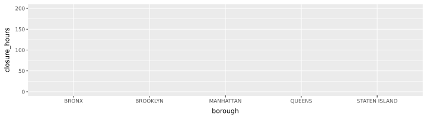
aes()is short for aesthetic.- The axes show up, but nothing is drawn since there is no geometry yet.
Using geom_*() objects
- Functions that start with the prefix
geom_*()specify the kind of geometric objects to add to the plot.
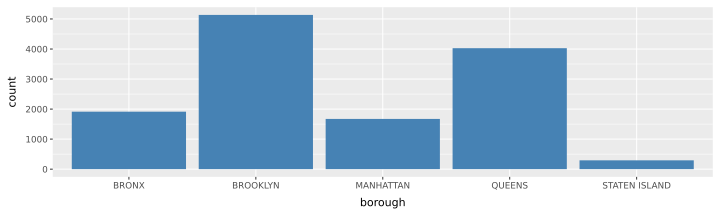
- In the code above,
geom_bar()draws a bar for each borough, andfill="steelblue"makes the bars blue. geom_bar()counts the rows for me, so I don’t need ayvariable mapping in theaes()function.
Common geom_*() object Functions
| Function | What it makes |
|---|---|
geom_point() |
Scatter plot |
geom_line() |
Line plot, often over time |
geom_col() |
Bar chart with heights we give it |
geom_bar() |
Bar chart that count the rows for us |
geom_histogram() |
Shows distribution of data using bins |
geom_boxplot() |
Shows median and quartiles for each group |
geom_map() |
Draws polygons representing areas |
- All of these have unique parameters that you must pass.
Using scale_*() translations
- Functions that start with this prefix customize the styling of visual elements from the data mapping.
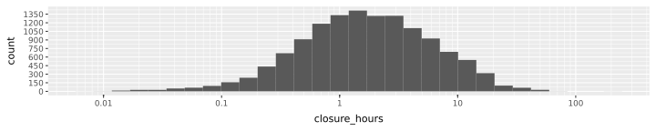
- Here, the scale function,
scale_x_log10(), changes the x-axis to a log scale, so each tick mark is 10 times bigger than the last one. - The scale function,
scale_y_continuous(), is used to customize how numerical values are displayed along the y-axis. - Using the
breaksparameter, the scale function changes the y-axis by specifying which values should appear as tick marks. - The histogram shows the distribution of closure times across all requests in parking.
Plot for scale_*()
Here is a larger view of the plot:
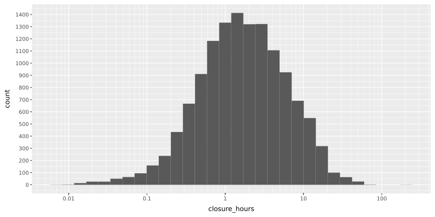
Common scale_*() Functions
| Function | What it does |
|---|---|
scale_x_log10() |
Uses a log scale on the x-axis |
scale_y_log10() |
Uses a log scale on the y-axis |
scale_x_continuous() |
Controls x-axis scale and tick marks |
scale_y_continuous() |
Controls y-axis scale and tick marks |
scale_x_discrete() |
Controls x-axis for categorical data |
scale_y_discrete() |
Controls y-axis for categorical data |
scale_x_reverse() |
Reverses x-axis scale |
scale_y_reverse() |
Reverses y-axis scale |
Using position_*() adjustments
- Functions that start with this prefix adjust the position of elements in the plot.
- For instance, you can have bars placed side-by-side instead of stacking them by using
position_dodge().
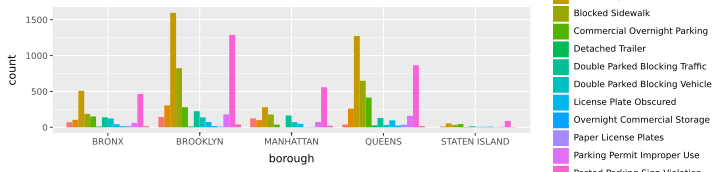
- Here,
position_dodge()tellsgeom_bar()to arrange the bars side by side. fill="problem_detail"gives each problem detail a color.
Plot for position_*()
Here is a larger view of the plot:
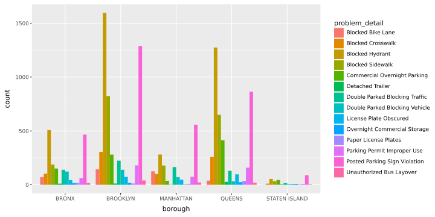
Common position_*() Functions
| Function | What it does |
|---|---|
position_stack() |
Stacks objects on top of each other |
position_dodge() |
Places objects side by side |
position_jitter() |
Adds small random offsets to positions |
Using coord_*() projections
- Functions that start with this prefix specify the coordinate system of the plot.
- You could use
coord_cartesian()to zoom in in part of the plot,coord_polar()for plotting using polar coordinates, orcoord_flip()to swap the x and y axes.
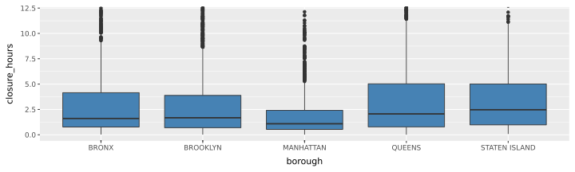
- Here,
coord_cartesian(ylim=(0, 12))zooms in on the first 12 hours.
Plots of coord_*() projections
Here is a comparison of the zoomed and unzoomed plots:
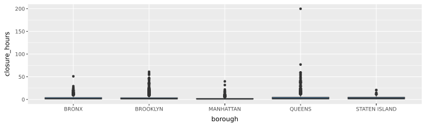
Not zoomed
Zoomed
Common coord_*() Functions
| Function | What it does |
|---|---|
coord_cartesian() |
Zooms in on a region of the plot |
coord_flip() |
Swaps the x- and y-axes |
coord_polar() |
Uses polar coordinates |
coord_fixed() |
Keeps fixed ratio between the x- and y-axes |
coord_equal() |
Makes x- and y-axes scales equal |
coord_trans() |
Transforms the coordinate system |
Using theme_*() styling
- Functions that start with this prefix control the style of all the aspects of the plot that aren’t already decided by the data.
- You can also use the general
theme()function to create new custom themes, and theelement_*()prefixed functions to configure new themes.
(
ggplot(
data=parking,
mapping=aes(x="borough", y="closure_hours", fill="borough")
)
+ geom_boxplot()
+ scale_y_log10()
+ theme_minimal()
+ theme(
figure_size=(10, 3.8),
plot_title=element_text(size=18, weight="bold"),
axis_text_x=element_text(size=12),
axis_text_y=element_text(size=12),
panel_background=element_rect(fill="aliceblue"),
panel_grid_major_x=element_line(color="steelblue", linetype="dashed"),
panel_grid_major_y=element_line(color="steelblue", linetype="dashed")
)
)- Here, I used
theme()to configure the look of my plot. There,element_textchanges the size of the text on the x- and y-axes,element_rectto change the color of the background,element_lineto make blue dashed grid lines, andfigure_sizeto change the overall size of the plot.
Plot of theme_*()
Here is the plot from the previous slide:
(
ggplot(
data=parking,
mapping=aes(x="borough", y="closure_hours", fill="borough")
)
+ geom_boxplot()
+ scale_y_log10()
+ theme_minimal()
+ theme(
figure_size=(10, 3.4),
plot_title=element_text(size=18, weight="bold"),
axis_text_x=element_text(size=12),
axis_text_y=element_text(size=12),
panel_background=element_rect(fill="aliceblue"),
panel_grid_major_x=element_line(color="steelblue", linetype="dashed"),
panel_grid_major_y=element_line(color="steelblue", linetype="dashed"))
)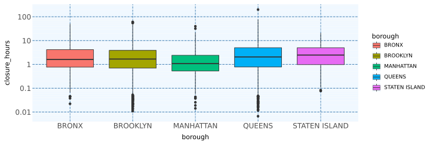
Common theme_*() Functions
| Function | What it does |
|---|---|
theme() |
Configure individual plot elements |
element_text() |
Controls text appearance |
element_line() |
Controls visual line |
element_rect() |
Controls rectangular background and borders |
element_blank() |
Hides visual element |
theme_minimal() |
Removes background elements but retains gridlines |
theme_void() |
Removes all background elements |
Using stat_*() calculations
- Functions that start with this prefix perform calculations on the data before the plot is drawn.
- For instance,
stat_summary()can calculate a summary such as the mean for each group.
(
ggplot(data=parking, mapping=aes(x="borough", y="closure_hours"))
+ stat_summary(
fun_y=np.mean, geom="bar", fill="steelblue", color="steelblue", size=1
)
+ stat_summary(fun_y=np.median, geom="point", color="darkorange", size=1)
+ theme(
figure_size=(10, 5),
panel_grid_major_x=element_blank(),
panel_grid_minor=element_blank(),)
)- Here, I used
stat_summary()twice to calculate the mean and medianclosure_hoursfor each borough. - I also used
geom="bar"to display the means as bars, andgeom="point"to display the medians as points.
Plot for stat_*()
(
ggplot(data=parking, mapping=aes(x="borough", y="closure_hours"))
+ stat_summary(
fun_y=np.mean, geom="bar", fill="steelblue", color="steelblue", size=1
)
+ stat_summary(fun_y=np.median, geom="point", color="darkorange", size=1)
+ theme(
figure_size=(10, 5),
panel_grid_major_x=element_blank(),
panel_grid_minor=element_blank(),)
)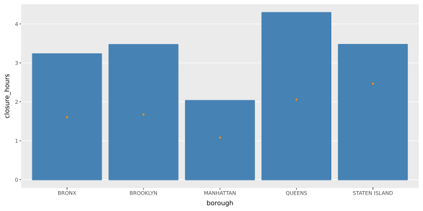
Common stat_*() Functions
| Function | What it does |
|---|---|
stat_summary() |
Calculates summary statistics for groups |
stat_count() |
Counts number of observations in each category |
stat_bin() |
Divides numerical data into bins |
stat_smooth() |
Calculates a smooth trend line |
stat_boxplot() |
Calculates statistics used to construct a boxplot |
stat_density() |
Estimates distribution density of data |
Using facet_*() subplots Part 1
- This map shows requests across all five boroughs in a single plot, but they can be separated using the faceting functions to examine eac borough separately.
- Here,
geom_map()uses the boundaries dataset to draw the borough boundaries, andgeom_point()uses the parking dataset to add the locations of illegal parking requests as points.
Unfaceted plot of NYC Boroughs

Using facet_*() subplots Part 2
- Functions that start with this prefix split a plot into multiple subplots.
- The facet functions,
facet_grid()andfacet_wrap(), determine how to split the data.
(
ggplot()
+ geom_map(data=boundaries, fill="white", color="gray")
+ geom_point(data=parking,
mapping=aes(x="longitude", y="latitude", color="borough"),
size=0.5, alpha=0.4, show_legend=False)
+ facet_wrap("~borough", ncol=5, scales="fixed")
+ coord_equal()
+ theme_minimal()
+ theme(figure_size=(14, 5))
)- Here, I used
facet_wrap()to create a subplot for each borough column. - You need to put
~before the column name in thefacet_wrapfunction. ncol=5arranges the panels in five columns so they don’t stack.scales="fixed"keeps the same longitude and latitude ranges in every panel, so the maps use comparable geographic extents.
Faceted plot of NYC Boroughs

- Each subplot shows the locations of illegal parking requests within a different borough.
- Separating the boroughs like this makes it easier to see how requests are distributed within each borough.
Common facet_*() Functions
| Function | What it does |
|---|---|
facet_wrap() |
Arranges panels by variables |
facet_grid() |
Arranges panels in rows and columns |
facet_null() |
Displays a single panel, so essentially does no faceting |
Putting it All Together in a Basic Template
Almost every plotnine plot has this pattern:
- Always put column names in quotes, like
"column_a". - Each
+adds another layer to the plot. - Put everything inside
( )to split the plot over many lines and make the code more readable. labs()lets you add labels like a titletheme_minimal()removes some unnecessary background elements, helping to focus attention on the data.- The plot shows up when it is the last line in the code cell.
Finding Top Problem Details
| request_id | created_at | closed_at | problem_detail | borough | incident_zip | latitude | longitude | closure_hours | zcta_match | ... | population_density_per_sqmi | median_household_income | median_household_income_moe | median_household_income_top_coded | households_total | households_total_moe | households_no_vehicle | households_no_vehicle_moe | share_households_with_vehicle | _merge | |
|---|---|---|---|---|---|---|---|---|---|---|---|---|---|---|---|---|---|---|---|---|---|
| 0 | 70393841 | 2026-09-12 23:59:29 | 2026-09-13 00:23:10 | Blocked Hydrant | BRONX | 10467 | 40.865430 | -73.867361 | 0.394722 | 10467 | ... | 41382.403433 | 49330.0 | 2681.0 | False | 38372.0 | 1074.0 | 24544.0 | 1056.0 | 0.360367 | both |
| 1 | 70397706 | 2026-09-12 23:58:24 | 2026-09-13 01:41:09 | Posted Parking Sign Violation | QUEENS | 11378 | 40.721038 | -73.890380 | 1.712500 | 11378 | ... | 14945.379877 | 85830.0 | 3957.0 | False | 12890.0 | 632.0 | 3006.0 | 389.0 | 0.766796 | both |
| 3 | 70394982 | 2026-09-12 23:56:38 | 2026-09-13 04:34:49 | Blocked Hydrant | BRONX | 10455 | 40.812371 | -73.905460 | 4.636389 | 10455 | ... | 63910.128388 | 36115.0 | 3299.0 | False | 16587.0 | 912.0 | 12687.0 | 1013.0 | 0.235124 | both |
| 4 | 70387502 | 2026-09-12 23:56:33 | 2026-09-13 04:35:16 | Blocked Hydrant | BRONX | 10454 | 40.805948 | -73.923310 | 4.645278 | 10454 | ... | 37330.188679 | 24086.0 | 3969.0 | False | 15135.0 | 691.0 | 11346.0 | 759.0 | 0.250347 | both |
| 10 | 70388683 | 2026-09-12 23:51:27 | 2026-09-13 00:32:08 | Blocked Hydrant | QUEENS | 11426 | 40.744646 | -73.718966 | 0.678056 | 11426 | ... | 14137.654771 | 103533.0 | 12268.0 | False | 6397.0 | 423.0 | 948.0 | 315.0 | 0.851806 | both |
5 rows × 25 columns
Question: Do closure times differ across boroughs for the most common problem details?
Layer 1: Data and Aesthetics
aes()connectsboroughto the x-axis andclosure_hoursto the y-axis. Since there is no geometry yet, nothing is drawn.figure_sizesets how big the plot is.
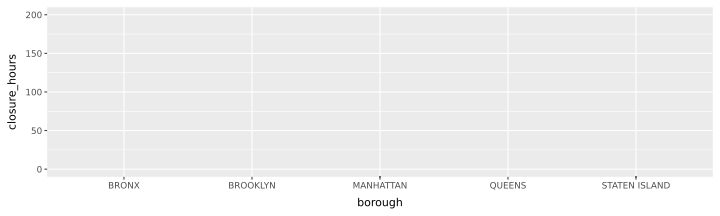
Layer 2: Add a Geometry
geom_boxplot()displays the median, spread, and potential outliers in closures times for each borough
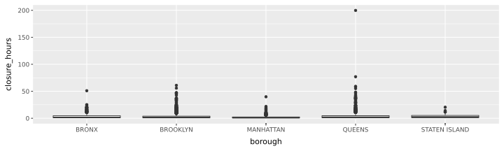
- Difficult to see differences among closure times.
Layer 3: Scale, Coordinates, Labels, and Themes
scale_y_log10()makes a logarithmic y-axis so it is easier to see differences in closure times.coord_flip()swaps the x- and y-axes, so the borough labels are easier to read.labs()added title and variables labels,theme_minimal()cleans up the plot.
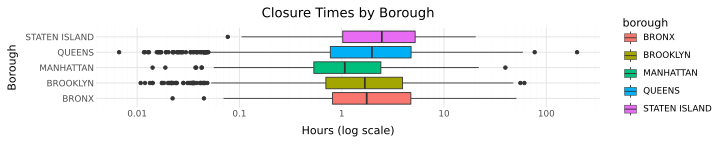
- Doesn’t differentiate
problem_detailscategories, so differences between categories cannot be examined separately.
Layer 4: Facets
facet_wrap("~problem_detail")creates subplots for the problem details.geom_hline(yintercept=24, linetype="dashed")draws a dashed line at 24 hrs.
(
ggplot(top, aes(x="borough", y="closure_hours", fill="borough"))
+ geom_boxplot()
+ geom_hline(yintercept=24, linetype="dashed")
+ scale_y_log10()
+ coord_flip()
+ facet_wrap("~problem_detail")
+ labs(
title="Closure Times by Borough and Problem Detail",
x="Borough",
y="Hours (log scale)"
)
+ theme_minimal()
+ theme(figure_size=(10, 2.8)))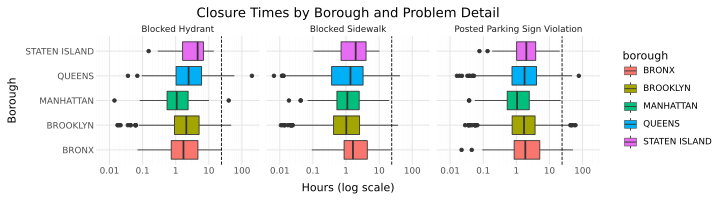
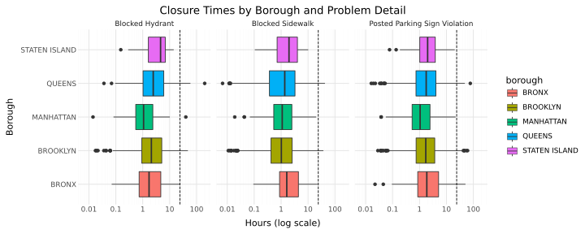
- Yes, closure times slightly differ across boroughs for the most common problem details. Manhattan has the lowest median in all 3 problem details at about 1 hour. The others tend to be higher, especially Staten Island.
- Blocked Hydrant is the problem detail with the biggest differences. Staten Island has the highest median which appears to be about 4.5 hours, Queens is about 2.5, Brooklyn is about 2.1, Bronx is about 1.5, and Manhattan is about 1.1.
- Blocked Sidewalk and Posted Parking Sign Violation are similar. Medians of both for every borough appear to between about 1 and 2 hours.
Conclusion
- The Grammar of Graphics allows you to build plots by combining separeate componenets. This has offers many advantages over more traditional methods, such as choosing a chart type, since it allows for more dynamic manipulation of plots without rewriting everything.
- Using the plotnine package, I was able to make use of these features in the python language, meshing well with my data science workflow.
- Thus, by understanding components and how to build plots step by step, plotnine makes it easier to create and interpret visualizations in python.
AI Disclosure
AI disclosure: I used ChatGPT (OpenAi) to help me: - Fix the plotnine code mistakes - Help with installation problems involving plotnine - Debugging rendering issues - Advice on using log scales to make data more readable - How to use geopandas to add a map for boroughs.
I ran the code and wrote the explanations myself.
References
Data, NYC Open. 2026a. “311 Service Requests from 2020 to Present.” Office of Technology; Innovation (OTI). https://data.cityofnewyork.us/Social-Services/311-Service-Requests-from-2020-to-Present/erm2-nwe9/about_data.
Data, NYC Open. 2026b. “Borough Boundaries.” Department of City Planning (DCP). https://data.cityofnewyork.us/City-Government/Borough-Boundaries/gthc-hcne/about_data.
Quarto. 2026a. “Quarto Computations with Python.” https://quarto.org/docs/computations/python.html.
Quarto. 2026b. “Quarto Presentations.” https://quarto.org/docs/presentations/.
Quarto. 2026c. “RevealJS Format Options.” https://quarto.org/docs/presentations/revealjs/.
Wickham, Hadley. 2016. “Ggplot2: Elegant Graphics for Data Analysis.” Springer. https://ggplot2-book.org/mastery.html.
Yan, Jun. 2026. “Introduction to Data Science: Chapter 5, Problem Formulation.” https://statds.github.io/ids-book/05-formulation.html.